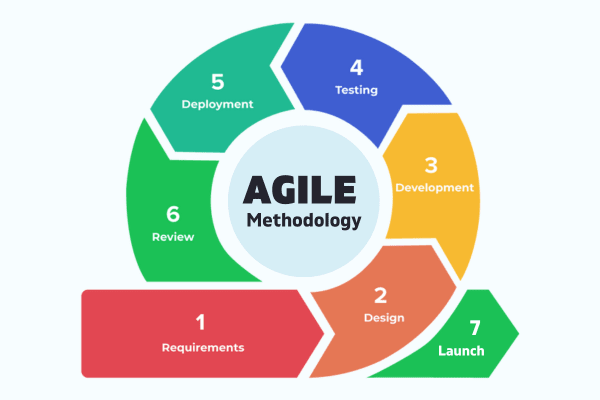
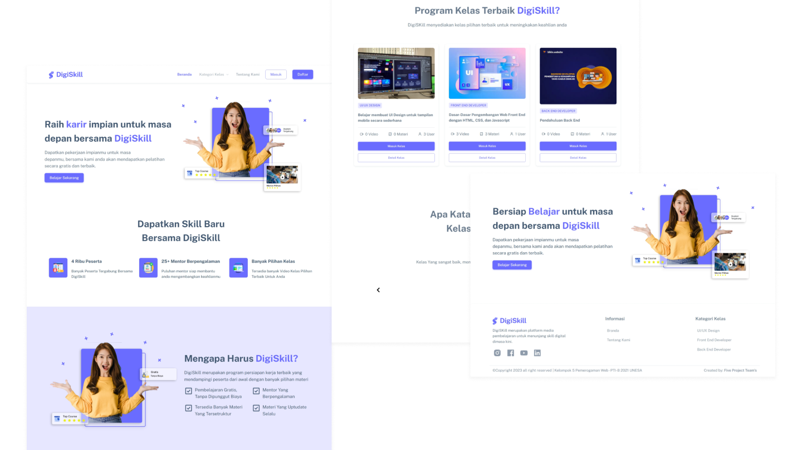
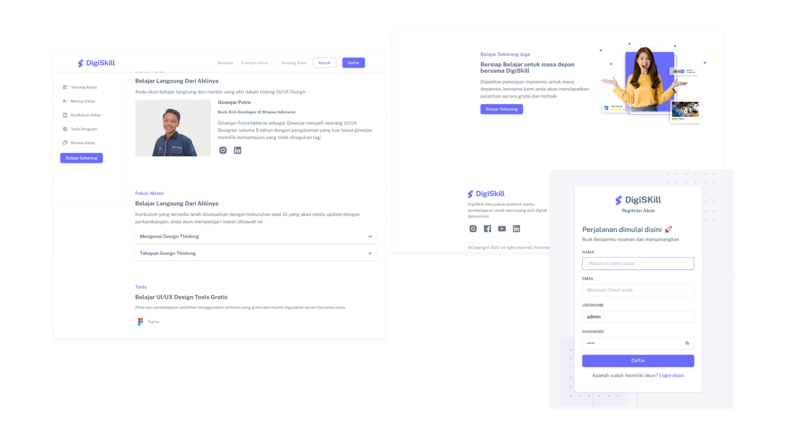
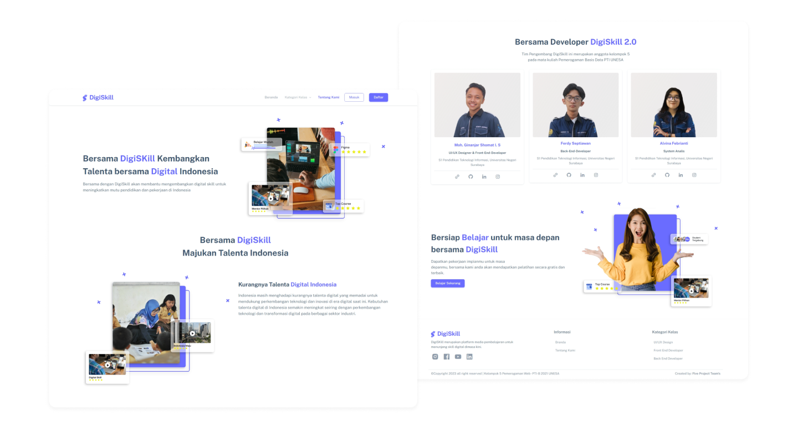
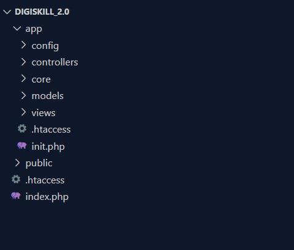

DigiSkill: Website Penyedia Pelatihan
Digital
Skills
Tentang Project
DigiSki merupakan sebuah website untuk pengembangan keahlian digital dimasa kini,
pada website ini user akan mempelajari materi sesuai dengan keiingan pengguna. Digiskill
Menyediakan fitur berbagai macam kelas yang dapat diakses oleh pengguna. DigiSkill ini merupakan
projek akhir mata kuliah Pemrogaman Website. Pada project ini dikerjakan secara berkelompok oleh
Kelompok 5 yang terdiri dari Saya sebagai Project Manager, UI/UX Designer dan Front End
Developer, Alvina Febrianti sebagai Sistem Analis, dan Ferdy Septiawan sebagai Back End
Developer
Peran dan Tanggung Jawab
UI/UX Designer
- 1. Analisis kebutuhan pengguna dan penelitian pasar.
- 2. Pengembangan persona pengguna untuk memahami audiens target.
- 3. Penyusunan sketsa (sketches) dan wireframe awal.
- 4. Perancangan low-fi dan Hi-fi
- 5. Membuat component UI
- Optimalisasi responsif untuk berbagai perangkat dan ukuran layar.
- 6. Pengembangan prototipe interaktif untuk pengujian pengguna.
- 7. Pengujian desain dengan pengguna dan mengumpulkan umpan balik.
Front End Developer
- 1. Mengembangkan antarmuka pengguna (UI) berbasis desain yang telah dibuat
- 2. Implementasi desain menggunakan HTML, CSS, Bootstrap 5 dan JavaScript.
- 3. Integrasi dengan teknologi backend untuk pengambilan dan penyimpanan data.
- 4. Pengujian (debugging).
- 5. Pemeliharaan kode dan melakukan pembaruan secara berkala.
- 6. Penyusunan dokumentasi teknis
Proses Pengembangan
Pada tahap pengembangan ini menggunakan metode agile scrum. Metode Agile Scrum adalah
kerangka kerja pengembangan perangkat lunak yang berada di dalam kelompok metode Agile. Metode ini
didesain untuk meningkatkan fleksibilitas dan respon terhadap perubahan kebutuhan pelanggan dalam
pengembangan perangkat lunak.

Berikut merupakan proses pengembangan website DigiSkill dengan menggunakan metode Agile
Scrum:
Requirments
Pada tahap ini, kebutuhan proyek dikumpulkan dan didefinisikan secara rinci. Ini
melibatkan komunikasi dengan tim untuk memahami tujuan dan kebutuhan bisnis pada tugas ini. Kemudian
didapatkan kebutuhan fungsional pada website digiskill yaitu sebagai berikut:
User
- Registrasi
- Login
- Melihat Kelas
- Bergabung ke Kelas
- Mendapatkan, Mengerjakan, dan Mengumpulkan Tugas dari Mentor
- Memberikan Review pada Kelas yang Diikuti
- Mengedit Data Pribadi
- Logout
Mentor
- Login
- Bergabung ke kelas
- Melihat data user yang tergabung di kelas
- Mengelola materi
- Mengelola penugasan
- Mengelola penilaian
Admin
- Login
- Melihat data user yang tergabung ke kelas
- Mengelola kelas
- Mengelola data mentor
- Logout
Kemudian setelah itu dibuat usecase diagram seperti dibawah ini
Design
Pada tahap Design, saya sebagai UI/UX Designer bertugas membuat tampilan desain UI yang menarik, pada
tahap desain ini dibuat untuk beberapa tampilan yaitu, Landing page user, Dahsboad Admin, dan Dashboard
Mentor. Berikut beberapa tampilan UI Design Digiskill.



Development
Pada tahap pengembangan digiskill menggunakan konsep MVC. Konsep Model-View-Controller (MVC) adalah
sebuah paradigma desain arsitektur perangkat lunak yang memisahkan komponen-komponen utama dalam sebuah
aplikasi. Model, View, dan Controller merupakan tiga komponen utama yang bekerja bersama untuk
memisahkan tanggung jawab dan meningkatkan pemeliharaan dan pengembangan perangkat lunak. Berikut untuk
susunan folder pada project DigiSkill

Pada tahap ini dibuat MVC untuk setiap role yaitu User, Mentor, dan Admin.
Pada segi tampilan, DigiSkill menggunakan Bootstrap versi 5 untuk pengembangan Front-end-developer
dengan beberapa perubahan, Tujuan penggunaan Bootstrap versi 5 untuk mempercepat proses pengembangan.
Untuk source code digiskill dapat diakses pada Github.
View Github →
Testing
Tahap pengujian untuk memastikan bahwa perangkat lunak berfungsi sesuai dengan harapan dan memenuhi
kebutuhan pengguna. Beberapa hal yang tim kami lakukan yaitu:
Pengujian fungsional untuk memastikan setiap fitur bekerja dengan benar, Pengujian performa dan keamanan
jika diperlukan,
Melibatkan pengujian pengguna (user acceptance testing).
Deployment
Mengembangkan perangkat lunak ke lingkungan produksi sehingga dapat diakses oleh pengguna akhir. Pada
project ini kami tidak melakukan ke proses Deployment website karena Requirments dari dosen pengampu
mata kuliah tidak memerlukan Deployment.
Review
Pada tahap ini kami melakukan evaluasi terhadap hasil pengembangan untuk menilai kualitas dan kesesuaian
dengan
kebutuhan bersama Tim dan Dosen.
Beberapa hal yang kami lakukan yaitu:
Mengadakan pertemuan retrospektif untuk mengevaluasi proses pengembangan,
Mengumpulkan umpan balik dari pemangku kepentingan, dan
Mengidentifikasi peluang perbaikan untuk iterasi berikutnya.
Launch
Menandai akhir dari siklus pengembangan dan mulainya pemakaian produk oleh pengguna akhir.
Hal-hal yang kami lakukan yaitu:
Memberikan laporan kepada dosen pengampu mata kuliahh tentang project yang telah dibuat dan
Memantau kinerja dan respons pengguna setelah peluncuran.
Apa yang saya pelajari?
Sebagai seorang UI/UX Designer dan Front-end Developer, pengalaman saya dalam proyek Digiskill telah
menjadi perjalanan pembelajaran yang sangat berharga. Melibatkan diri dalam proyek ini tidak hanya
memberikan saya kesempatan untuk mengaplikasikan pengetahuan dan keterampilan desain saya, tetapi juga
menghadirkan berbagai tantangan dan peluang pengembangan website, saya belajar membuat sebuah UI Desaign
yang mudah dipahami dan juga mudah dikembangkan oleh seorang front end developer. Selain itu saya
belajar proses pengembangan website dengan model MVC.
website MVC pada project ini.
Melalui proyek Digiskill, saya mengalami kemajuan signifikan dalam mengelola tugas dan waktu. Terlibat
sebagai seorang yang fokus pada manajemen, saya berhasil merancang strategi manajemen tugas efektif,
memprioritaskan pekerjaan dengan cerdas, dan mengoptimalkan penggunaan waktu saya. Pengalaman ini tidak
hanya memperkuat keterampilan organisasi, tetapi juga membuka wawasan dalam berkomunikasi secara efektif
dengan tim dan pemangku kepentingan. Keseluruhan, proyek ini memberikan fondasi kokoh untuk pertumbuhan
pribadi dan profesional saya di bidang manajemen.